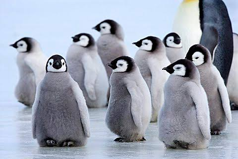

Penguin Characteristics
- Flightless Birds
- Waterproof Feathers
- Excellent Swimmers
Penguins are flightless birds that have adpated to survice in a variety of environments. They are excellent swimmers and use their powerful flippers to move efficiently through the water. Most of the time penguins search the ocean for food including fish, squid, and krill they catch while swimming. Penguins are mostly known for their black and white character which helps them blend in with their surroundings and avoid predators. Penguins are social animals that live in large colonies where they communicate with each other through vocalizations and body language. They are also known for living in cold places like Antarctica but some species can be found in warmer parts of the world like South Africa, Australia, and South America.
Even though penguins look similar there are 18 different species of penguins that vary in size, color, and habitat. The Emperor penguin is the largest species and can grow up to 4 feet tall. The Little Blue penguin is the smallest species and can grow up to 16 inches tall. The King penguin is the second largest species and can grow up to 3 feet tall. Another type of species of penguin is the Galapagos penguin which is the only species that lives near the equator. These different species of penguins show how each have adpated to their environment around the world.


| Types | Size |
|---|---|
| Emperor Penguin | 4 feet tall |
| King Penguin | 3 feet tall |
| Little Blue Penguin | 16 inches tall |
Learn more about different species of penguins by visiting at BirdLife International
Learn more about penguin heights by visiting at Smithsonian Ocean